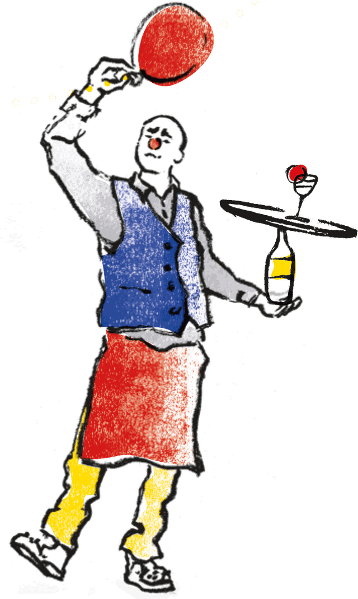

Organiser un spectacle Clown & Mental

Nous proposons au choix :
Le spectacle Resto Dingo, des Extraits du spectacle Resto Dingo (les meilleures blagues de Béchamel ou bien quelques unes de ses chansons), des Interventions en milieu scolaire autour du spectacle La Métamorphose par le biais du Requin (à partir du collège).
-
Vous êtes directeur d’une salle de spectacle ?
Si vous recherchez un spectacle alliant émotion, handicap et échanges, n’hésitez pas à nous contacter. La mise en scène de notre spectacle est simple et souple. Une mise en œuvre légère !
-
Vous êtes directeur d’un établissement scolaire, à partir du collège ?
Le requin peut faire son apparition parmi vos élèves pour sensibiliser sur la maladie mentale et la déstigmatiser. 20 minutes d’intervention artistique et 20 minutes d’échange avec vos élèves pour parler de leurs ressentis par rapport au spectacle et répondre à leurs questions ouvertes tous en même temps. Le bord plateau permettra à chacun de mieux comprendre et percevoir le handicap psychique.
-
Vous êtes chef de service d’une unité psychiatrique, enseignant auprès de futurs médecins ou de soignants ?
Nous vous proposons un spectacle adapté à l’environnement psychiatrique pour que les soignants et les soignés passent un moment distrayant et reliant, autour de la question de la maladie mentale.
Dans le cadre de l’enseignement, nous proposons une intervention artistique suivie d’un échange autour des troubles psychiques.
En faisant intervenir l’Association Clown & Mental,
vous participez à l’action engagée par l’Etat dans le cadre de la lutte contre la stigmatisation de la maladie mentale.
Les bords de plateau Un espace de discussion
Sébastien sera toujours accompagné en tournée et l’Association sera heureuse de proposer - dès que ce sera possible pour le lieu d’accueil - un bord de plateau à l’issue du spectacle. La durée du spectacle (45 minutes) le permet. Ce sera l’occasion d’écouter le ressenti du public, de répondre aux questions qu’il se pose sur le travail de Sébastien et sa démarche artistique. Clown & Mental donnera aussi un espace pour parler de santé mentale.
Des projets plus ambitieux sont aussi possibles avec l’organisation de temps de paroles plus approfondis, la mise en place de tables rondes thématiques ou d’ateliers d’actions culturelles.
L’Association Clown & Mental regorge de ressources : ses membres actifs sont issus du monde de la culture et/ou du monde du soin. Tous ont à cœur de mieux faire connaître la maladie mentale et d’aider les familles touchées par ce sujet.